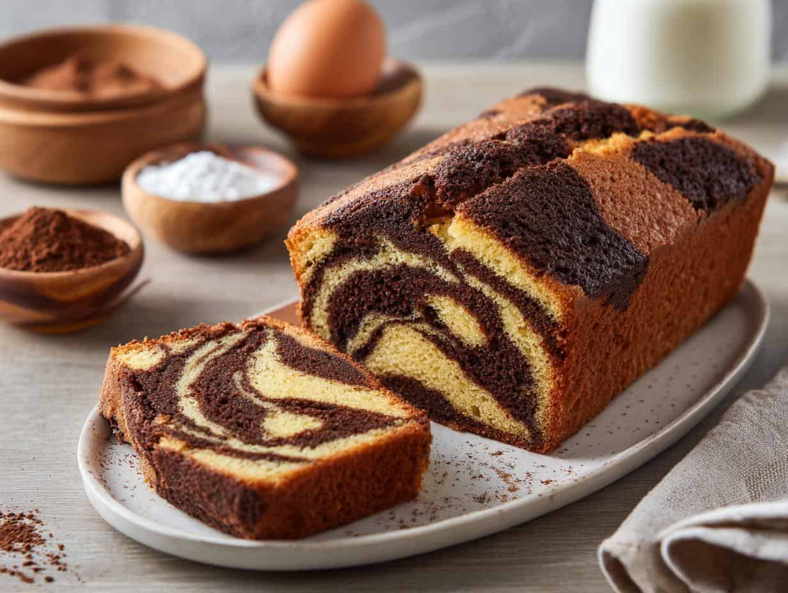

Budín Marmolado

Ingredientes
- 2 huevos
- 1 taza de azúcar
- 1/2 taza de aceite
- 1/2 taza de leche
- 2 tazas de harina leudante
- 2 cdas colmadas de cacao amargo
- 1 cda de esencia de vainilla
- Opcional: trozos de chocolate
Paso a Paso
- Precalentar el horno a temperatura media.
- En un bol, batir los dos huevos junto con el azúcar.
- Agregar el aceite y la leche y batir hasta integrar.
- Incorporar la harina leudante en dos partes.
- Disolver cacao amargo con agua hirviendo hasta formar una pasta y agregarle la mitad de la preparación hecha anteriormente.
- Añadirle esencia de vainilla a la preparación sin chocolate.
- Verter la mezcla en una budinera enmantecada y enharinada, intercalando la mezcla de chocolate y la de vainilla.
- Llevar al horno medio por aproximadamente 50 minutos, o hasta que al pincharlo con un palito este salga seco.